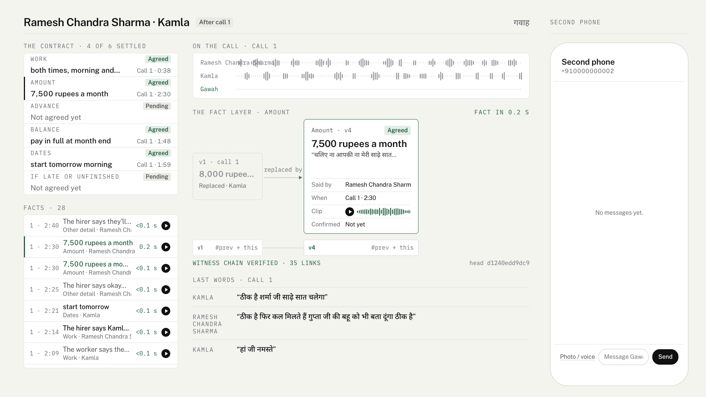
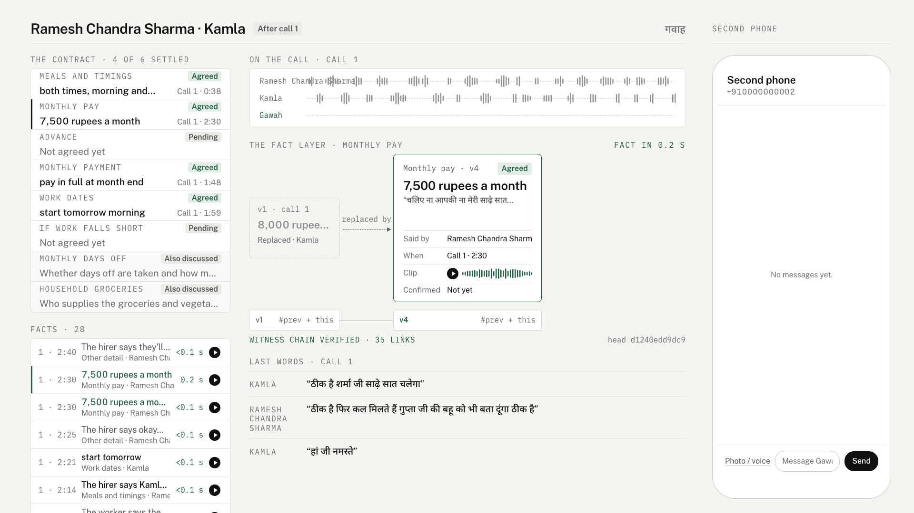
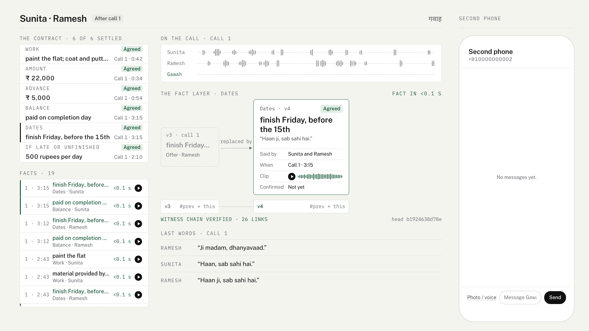
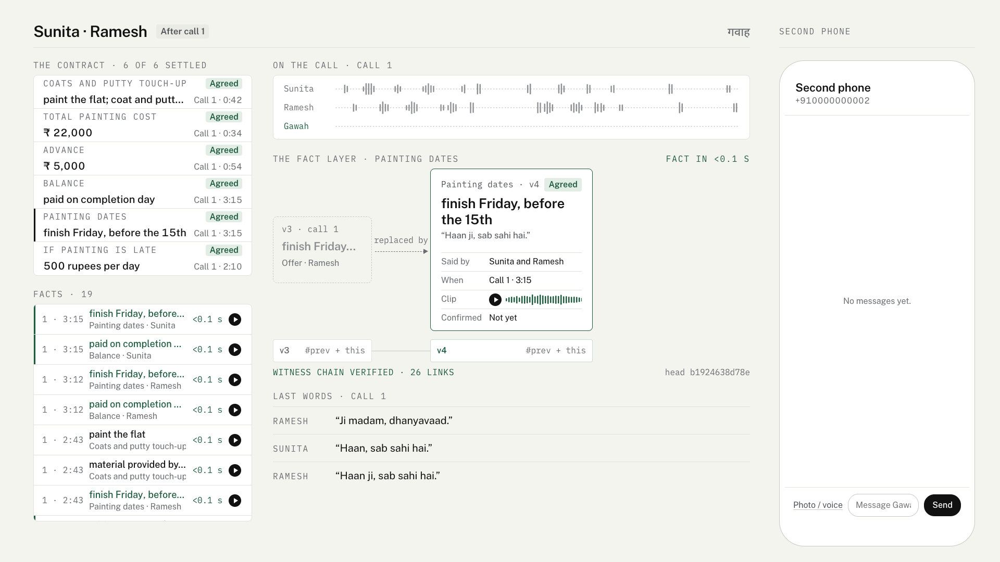

Generated labels on the real dashboard
Shot from the offline app with memory's saved replies. Only the names change: state.js is served with
gpt-6-luna's labels for that call (its read of the whole call; a label that fails the length or no-values lint keeps
its static name). The "Also discussed" rows are drawn on after load: today's board has no place for them.
Made by spikes/7-prototype.py; the numbers are in spikes/7-labels.md.
Cook, a trial month (holdout_cook_month)


Painter, the demo call (demo_call_1)


What Gawah would ask about the work, if it were left open
| Call | Today (judge.py) | Generated |
|---|---|---|
| Cook | Ask the hirer what exactly the work is. | Ask the hirer what meals to cook and when to make them. |
| Painter | Ask the hirer what exactly the work is. | "Ask both speakers to confirm what painting work is included": the model dropped {who}, so the design falls back to today's wording. |